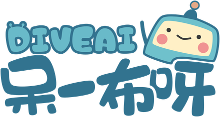
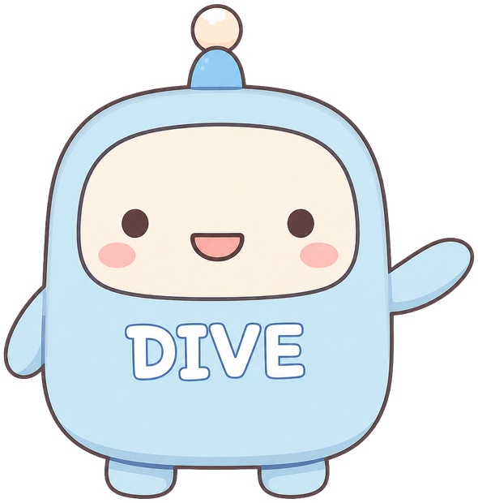
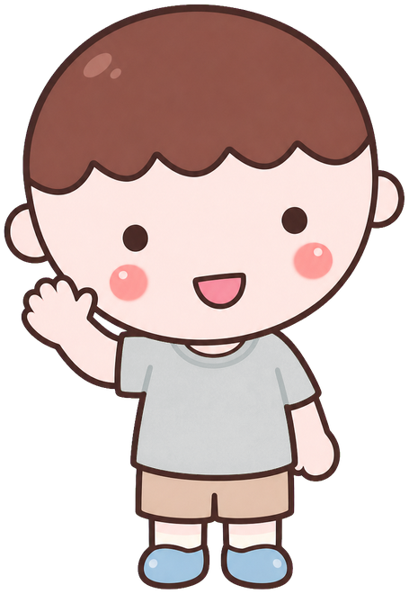
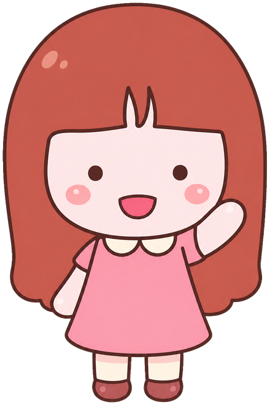
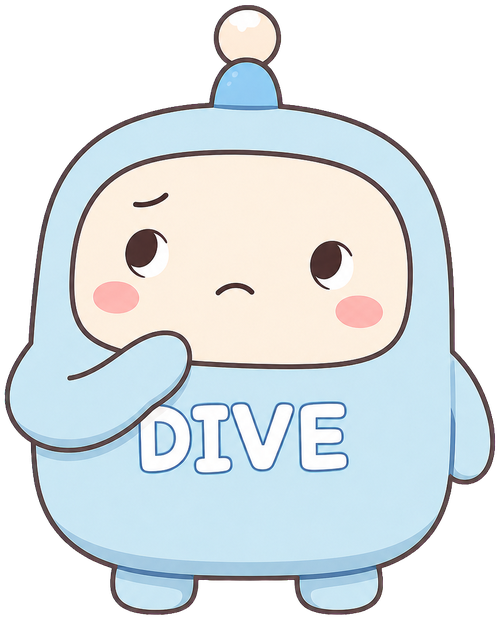
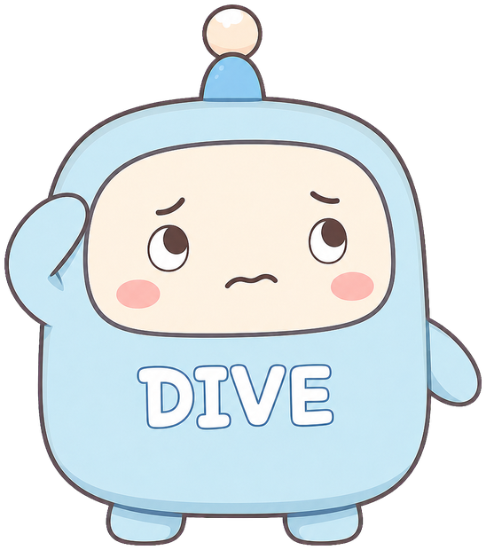
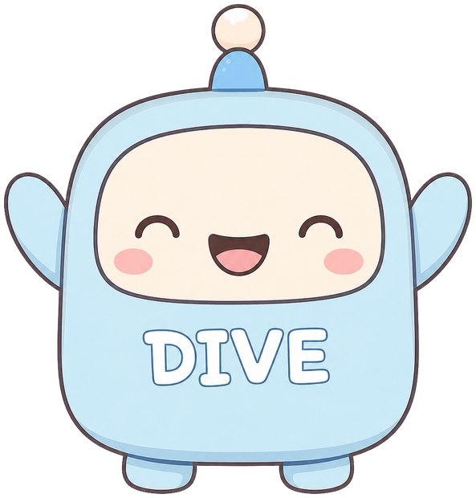

一起潛進 AI！
打造你的呆萌型 AI 機器人 🤖

今天的潛水路線圖

先分組！
先跟同組同學自我介紹，等等整場都用隊名一起闖關、計分。


潛點 1 餵呆一布吃什麼？
但它不會自己知道要做什麼。
很清楚地告訴呆一布兩件事：輸入是什麼、輸出是什麼。中間怎麼學，交給它。
打造「股價預測」機器人

想到什麼就喊出來——答案很多種都對！只要你那組有人開口，就加分。
預測某校的「學測分數」
你想到的那些輸入資料，真的拿得到嗎？好不好收集？
算出「這一餐的營養成分」
別把輸入輸出搞反
「我吃了幾克蛋白質」是答案，不是輸入喔。
輸出不是固定長度
營養成分是一長串，跟「漲/跌」很不一樣。
一個 AI 不必包辦
可以先「拍照 → 認出食物」，再交給下一步。

設計你自己的呆一布！
越貼近生活越好。
① 它的輸入是什麼 ② 輸出是什麼 ③ 你為什麼想要它

潛點 2 分數怎麼變機率？
呆一布看了一張圖，吐出三個分數：
規則只有一條：所有機率加起來 ＝ 1，而且每個都 ≥ 0。
你來發明！
輸入任何數、輸出永遠是正的？
揭曉：你發明了 softmax！
換個氣，等等繼續潛 🤿
喝口水、動一動，等等我們去看「唬爛王」的祕密！

潛點 3 LLM 其實在做什麼？
看前面的字，猜下一個字。
手機輸入法的選字預測、玩文字接龍——LLM 就是這個，只是強太多了。它不是「查到真相」，而是「生成」一段接得下去的字。
選字，就是用 softmax 選的！
每個字先給一個編號，模型對「下一個字」吐出一堆分數：
你們就是一台 LLM！
給一個開頭，組內同學輪流、一次只加一個字，接成一句話。跟別組同開頭比比看——結果差多少？
LLM 生成的，都是「幻覺」
不是「查到真相」。
特別是 AI 幫你寫的作業、報告——一定要讀完、真的懂、改過，變成你自己的東西，才能交出去。
寫 Prompt 沒那麼難
提供正確的資訊
它不知道你腦中的背景——把該給的資料、條件講清楚。
給清楚的指引
要它做什麼、輸出成什麼樣子、給誰看，講明白。
必殺技：和 AI 一起「來回」工作
爛 prompt：「幫我寫報告。」——各組喊一句，你會補什麼讓它變清楚？
潛點 4 教 AI 跑腿：AI Agent
不只「你問一句、它答一段」，而是為了達成目標，自己一步步行動：
規劃一場班遊！
只能用嘴巴想、說話，不准自己查任何東西。
只回答算式的答案。
可用手機查，只回傳查到的內容，不給意見。
回傳日期、路線之類的事實。
記下 LLM 每次「呼叫了哪個工具、輸入什麼」。
每人 500 元內的班遊。LLM 每次要明說「我要呼叫○○，輸入是…」。
自己越強，AI 就越強
你才有辦法教 AI、要它幫你做好。
今天最讓你「蛤？！」的
一件事是
AI 會接龍，
但你的人生劇本要自己寫。